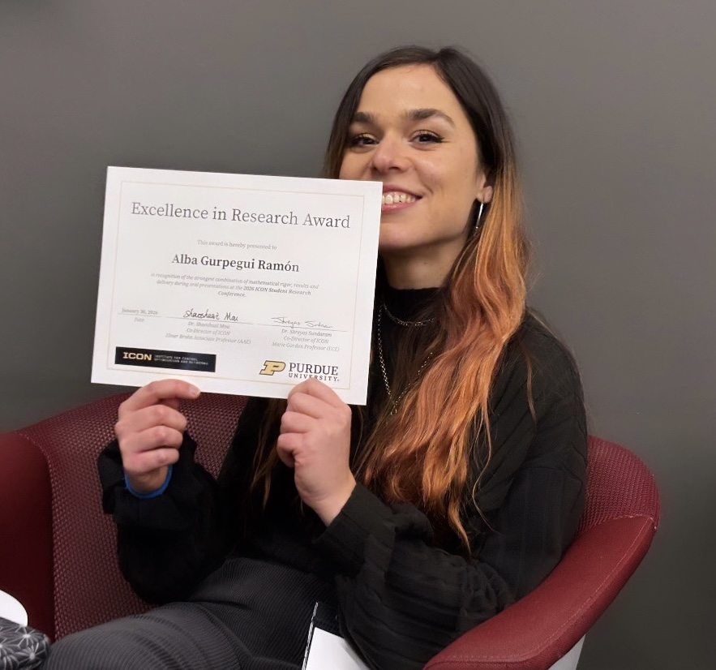
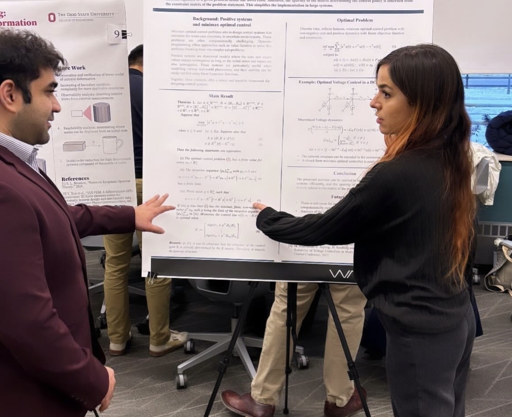
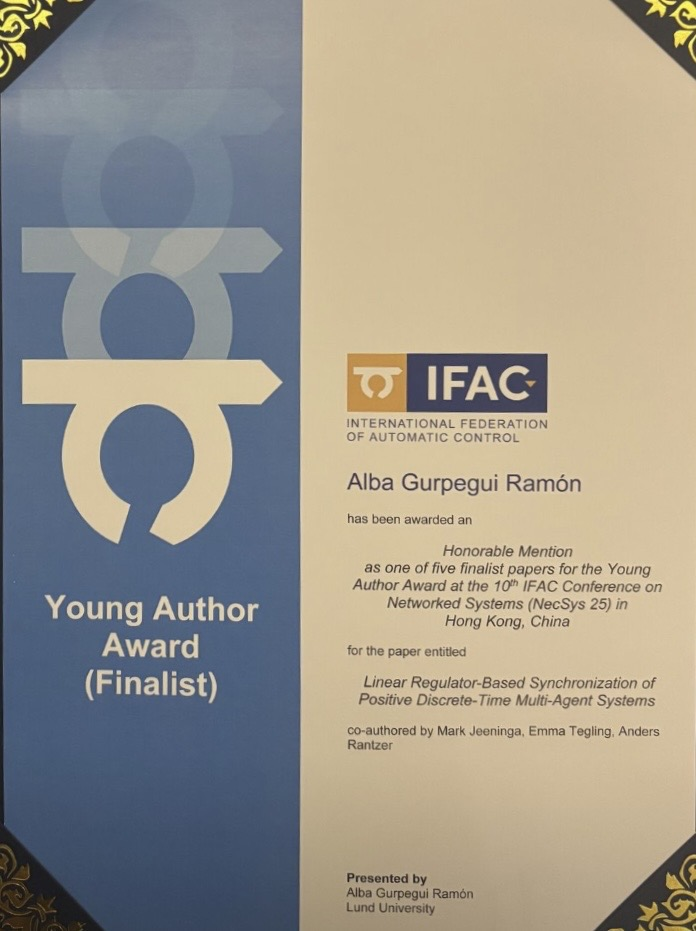
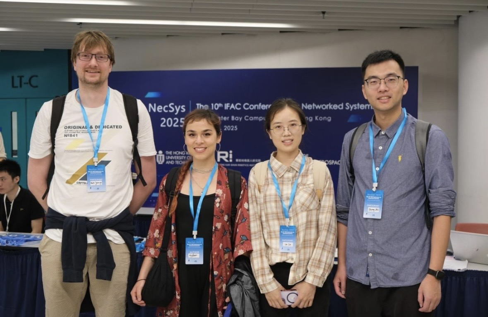
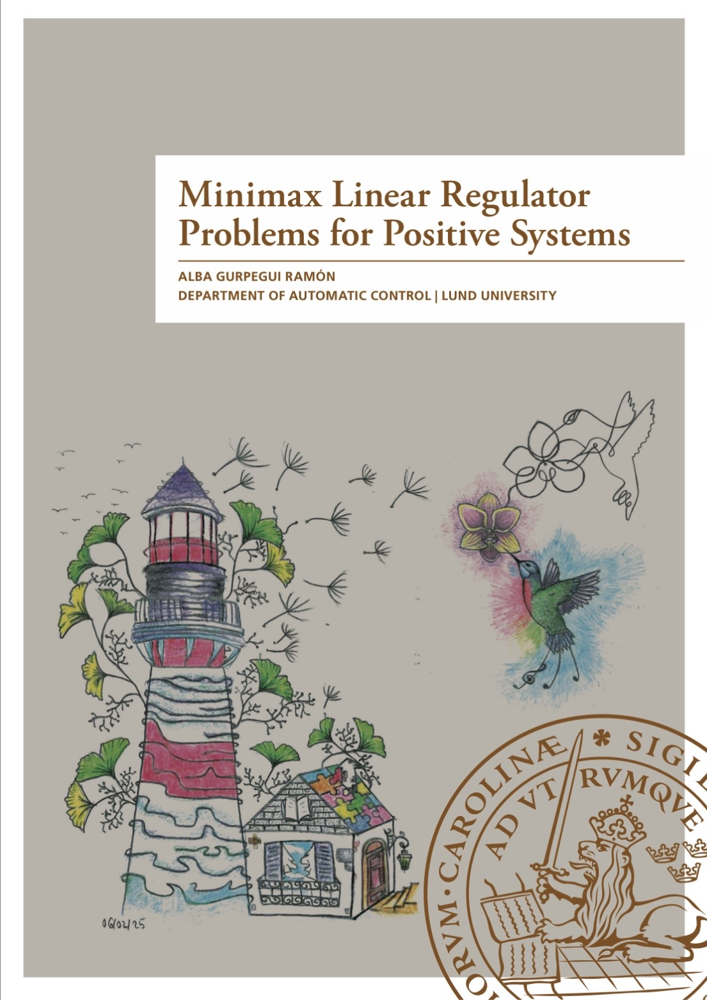
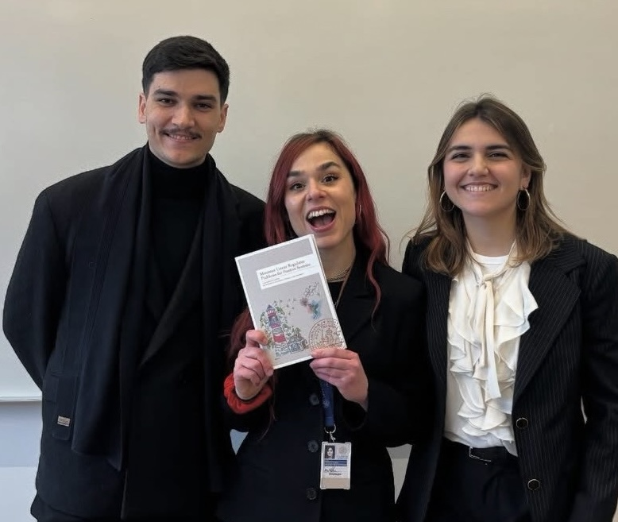

|
Past Updates
30.01.26 Excellence in Research Award at the ICON Student Research Conference 2026


On the 29th and 30th of January, I attended the ICON Student Research Conference, where I had the opportunity to present my work on minimax optimal control for positive systems in discrete time, both in a control session and in one of the poster sessions. I would like to highlight the keynote by Dr. Anuradha Annaswamy, which preceded the session where I presented. It was truly inspiring. Apart from being a great experience where I engaged in many wonderful conversations, I was awarded the Excellence in Research Prize, which felt incredibly rewarding. Thanks again!
|
02.06.26-05.06.2026 IFAC YOUNG AUTHOR AWARD FINALIST


On the 2nd of June, I arrived in Hong Kong to attend the 10th IFAC Conference on Networked Systems.Because I was nominated for the Best Young Author Award, I presented my research in an oralpresentation. We were two finalists, and even though I did not win first place, I received a lot of interest and positive feedback that made me feel as if I had won. Congratulations to all the presenters. Speaking of winning, something I can definitely highlight from this conference was the social interaction with the different professors and Ph.D. students. In particular, thank you Shiyong Zhu and Lin Lin for taking us around and showing us what life in Hong Kong looks like. Also, big thanks to Prof. James Lam and Prof. Jie Chen for inviting me to give a talk at their research groups. I would also like to extend my gratitude to the Royal Physiographic Society of Lund, who granted me the Young Researchers Ph.D. Students Grant, with which I could finance this amazing trip!
|
28.02.2026 I defended my Licenciate Thesis


After months of work, I finally defended my Licentiate Thesis. Thanks to my opponent Claudio Altafini for his insightful comments, to Anders Rantzer and Emma Tegling for their supervision and patience, and to my colleagues and friends for supporting me along the way. Now I can say I feel less scared about facing my Ph.D. defence, and I am optimistic I will be able to enjoy it. The thesis can already be found in Lund University publications.
I would also like to thank my parents, without whom I would not have had the opportunity to study what I wanted and to do so abroad, and my brother and childhood friend who came to my defence.
In this thesis, I consolidate the optimal control framework I have been investigating since I started my Ph.D. and its applications to network synchronization. I am excited about my future work towards optimal and robust observation and output feedback, which has already proved to be extra challenging.
|
|